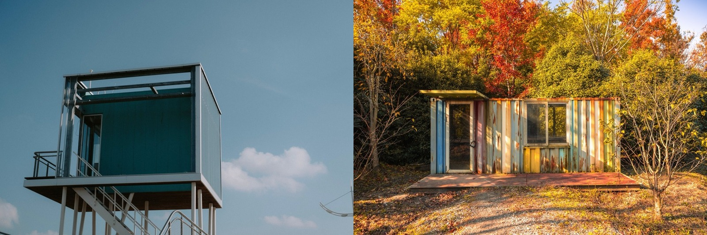

Prefab vs Shipping Container Homes
Two fast, factory-adjacent ways to build — purpose-built modular versus repurposed steel boxes. One is a smoother path to a comfortable home; the other is cheaper on paper and hotter in practice.

Both promise a faster, more controlled build than site-construction, but they start from opposite places. A prefab/modular home is purpose-built in a factory to be a home; a container home repurposes steel shipping boxes. The container looks cheaper — until you finish it for tropical living.
The quick verdict
For a comfortable permanent home, prefab/modular is usually the smoother, better-value path — it's designed to be a house. Container homes shine for small, modern, design-forward builds, but in tropical heat their steel shell demands serious insulation that erodes the apparent savings.The head-to-head
| Factor | Prefab / modular | Shipping container |
|---|---|---|
| Starting point | Purpose-built home modules | Repurposed steel boxes |
| Finished cost | 🟡 ~$100–230/sq ft | 🟡 ~$140–280/sq ft (finished) |
| 'Cheap' reputation | 🟡 Fair — saves time | 🔴 Misleading — shell cheap, finish costly |
| Build speed | 🟢 Fast, factory quality | 🟢 Fast once designed/permitted |
| Heat / climate fit | 🟡 Depends on spec | 🔴 Metal box = oven without heavy insulation |
| Moisture / rust | 🟢 If concrete/steel modules | 🔴 Humidity + salt rust steel |
| Design flexibility | 🟢 Wide — built to plan | 🟡 Constrained by box dimensions |
| Permitting / finance | 🟢 Well understood | 🟡 Varies; can be harder to mortgage |
How they actually differ
The container's low headline price is the trap: the steel box is cheap, but insulating, cladding, cutting openings, reinforcing, plumbing, and cooling it brings the finished cost close to — sometimes above — a small conventional or modular build, especially in the tropics where heavy insulation is non-negotiable. Modular starts as a finished home, so its cost is more honest and its comfort more predictable. Containers win on small-footprint, industrial-modern character; modular wins on comfort, flexibility, and value.
Which should you choose?
- Choose prefab/modular for a comfortable, conventional home built fast with predictable cost and easy financing.
- Choose a container home for a small, modern, design-forward build where the industrial aesthetic is the point — and budget for real insulation and coastal-grade corrosion protection.
- Both beat slow site-construction on speed; neither is automatically the cheapest once finished.
…in the tropics specifically
The tropics are hard on containers: a bare steel box is an oven, and coastal humidity and salt air corrode steel. Done right — ventilated over-roof, serious insulation, corrosion protection — a container home works and looks striking, but it's rarely the cheapest route to a comfortable family home here. Modular (especially concrete or steel modular systems) handles heat, humidity, and termites more gracefully and is closer to SORA's fixed-price, factory-precision approach.
Not sure which is right for your build?
SORA is a fixed-price design-build platform for foreign buyers in Panama and Costa Rica. We spec the material and method that actually fit your site, climate, and budget — and tell you straight when the cheaper option is the smarter one.
See real 2026 build costs →Frequently asked questions
Are shipping container homes cheaper than prefab homes?
Usually not, once finished. A used container is cheap, but insulating, cladding, cutting, reinforcing, and fitting it out — plus the heavy insulation the tropics demand — brings the finished cost close to or above a small prefab/modular home, which starts life purpose-built as a house.
Which is better for a hot climate, prefab or container?
Prefab/modular, generally. A container's steel shell absorbs heat aggressively and needs substantial insulation and ventilation to be livable in the tropics, whereas modular homes can be specified with appropriate insulation from the factory. Concrete or steel modular systems handle tropical heat and humidity well.
Is a container home hard to finance or permit?
It can be. Financing and permitting for container homes vary and are sometimes harder than for conventional or modular construction, which codes and banks understand well. Check local rules before committing.
Sources & verification
Figures in this guide were checked against primary and authoritative sources on 27 July 2026. Immigration, tax, and cost figures change — always confirm the current rules with the official body or a licensed professional before acting.
- MN Property Group — modular & off-site construction
- Infurnia — alternative building materials